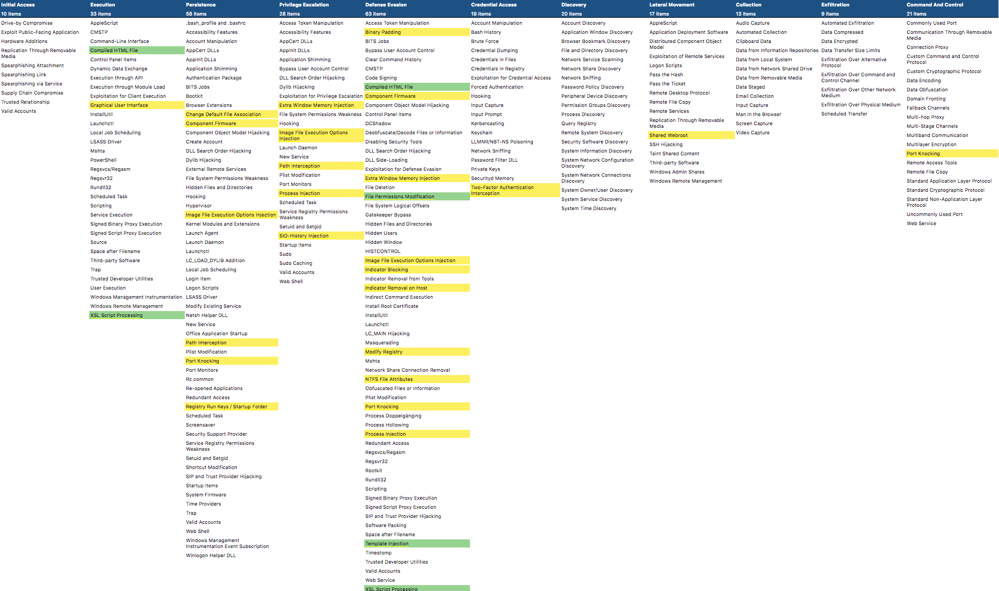

更新 - 2018年10月
从MediaWiki过渡
MediaWiki版本的ATT＆CK被移至attack-old.mitre.org并将一直持续到2019年1月底。旧网站将不会在此期限内收到内容更新，因此您需要使用新网站和STIX / TAXII获取最新的ATT和CK信息。
合并技术和软件ID
截至2018年10月更新，企业ATT和CK，PRE-ATT和CK以及移动设备的所有技术将具有相同的T ####编号方案。现有的PRE-ATT＆CK和移动技术ID已转换为企业ID。链接到旧维基上的特定页面或具有旧ID的新站点将链接到重定向到相应技术页面的页面。
移动软件ID已转换为S ####的企业格式。
注意：如果您为ATT和CK Navigator创建了包含PRE-ATT和CK或Mobile ATT＆CK技术的图层，则需要更新图层文件以使用新的ATT和CK技术ID。
战术ID
策略已被赋予格式为TA ####的ID号。
移动缓解ID
移动迁移已被赋予格式为M ####的ID号。
版本
我们为所有ATT和CK对象（技术，组，软件，移动缓解）实现了版本控制系统，以便更好地跟踪现有ATT和CK内容的增量变化。该系统将包含一个MAJOR.MINOR号码。所有对象将从10月发布的版本1.0开始。
技术
主要版本更改
- 名称变更
- 技术范围变更 - 定义的变化导致扩大或集中技术范围
次要版本更改
- 次要描述性信息 - 技术信息，示例，检测，缓解，参考
- 元数据更改 - 平台，权限，数据源，绕过的防御等。
组
主要版本更改
- 添加或更改别名
- 对组的描述和范围进行重大更改
次要版本更改
- 与新技术或软件的关系
- 新参考
软件
主要版本更改
- 添加或更改别名
- 高级别描述或信息更改
- 元数据更改（类型）
次要版本更改
- 与新技术或软件的关系
- 新参考
移动缓解措施
主要版本更改
- 名称变更
- 范围，描述或信息更改
次要版本更改
- 元数据变化
- 与新技术的关系
- 新参考
此外，ATT和CK矩阵的ATT和CK域技术视图将加上最后一次影响其结构和组织的变化的时间戳，该变化将作为其版本号。
技术
企业
新技术：
技术变化：
- 港口敲门
- 修改注册表
- SID-历史注入
- 图形用户界面
- 图像文件执行选项注入
- 注册表运行键/启动文件夹
- NTFS文件属性
- 主机上的指示器移除
- 指标阻塞
- 组件固件
- 二进制填充
- 共享Webroot
- 双因素身份验证拦截
- 更改默认文件关联
- 路径拦截
- 额外的窗口内存注入
- 工艺注射
您可以通过查看我们在此处提供的图层文件，在ATT和CK Navigator中查看新的和更改的企业技术。您还可以查看以下更改的预览！新技术是绿色的，改变的技术是黄色的。

PRE-ATT＆CK
没有变化
移动
“获取设备访问矩阵”已折叠为初始访问策略以匹配Enterprise的格式。
基于网络的效果矩阵被合并为两个策略类别：网络效果和远程服务效果。
技术增加和变化：
- 通过授权App Store提供恶意应用程序，以便在旧策略中整合多种技术
- 通过其他手段创建恶意应用程序
- 从恶意网页内容重命名的Drive-by Compromise
- 通过创建的无线电接口进行利用，以整合漏洞利用基带漏洞和恶意SMS消息
- 安装创建的不安全或恶意配置
- 创建供应链妥协是为了巩固旧策略中的几种技术
更新内容：
您可以通过查看我们在此处提供的图层文件，在ATT和CK导航器中查看新的和更改的移动技术。
组
由于额外报告增加了对重叠的信心，APT34和OilRig 合并
- 黑暗的卡拉卡尔
- Orangeworm
- 蜜蜂
- APT19
- 蜻蜓2.0（由于对来源的重新审查导致蜻蜓分离，导致评估这些被更好地追踪为两组）
- 冤仇
- 蓟马
- 斑潜蝇
- Gorgon集团
- DarkHydrus
- 钴集团
软件
企业
Poison Ivy和Darkmoon页面合并为Poison Ivy
移动